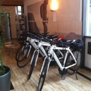
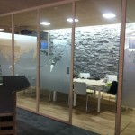
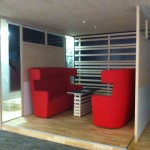

Meine letzte Walzstation – schee war’s
Der Organizer verabschiedet sich von einer insgesamt wunderbaren Walz.
Meine letzte Walzwoche liegt hinter mir und die Eindrücke zu Vaude in Tettnang klingen noch nach.
Mein erster Eindruck
Schon am ersten Tag traf ich auf eine sehr freundliche Atmosphäre und eine professionelle Einführung durch den Personalleiter. Wir starteten mit einer Vorstellungsrunde bei allen Assistentinnen und der Unternehmensführung. Und schon war „Mrs. Paperless auf der Walz“ bekannt. 😉
Natürlich war mir klar, dass mich nicht alle Assistentinnen mit meinem Über-die Schulter-Schauen“ begeistert empfangen würden. Umso erfreuter war ich, dass mir doch alle sehr offen begegneten, Vertrauen in meine Tätigkeit hatten und wir schnell viele gute Gespräche führen konnten. Auch die Unternehmensleitung sprach mir ihr sofortiges Vertrauen aus und ich sollte mich während der gesamten Woche bei ihnen völlig frei bewegen.
Während der Führung durch das Unternehmen ertappte ich mich dabei, wie ich immer wieder nach den stylischen Vaude-Produkten schielte. Da ich Produktentwicklung und Produktion besonders spannend finde, war ich sehr angetan, diese vor Ort sehen zu können. Denn: Vaude fertigt tatsächlich noch einige seiner Produkte in Deutschland.
Auf meinem 5-km-Heimweg per firmeneigenem E-Bike von Tettnang nach Obereisenbach – was mir als nordischem Flachländler bei der bergigen Landschaft hier sehr hilfreich war – ließ ich diesen ersten Tag mit seiner lockeren, familiären Atmosphäre ganz auf mich wirken.

Das Innenleben bei Vaude
Als erfahrene Beraterin blieben mir die Herausforderungen, die Vaude zu meistern hat, natürlich nicht lange verborgen. So war der Unternehmensgründer bis vor wenigen Jahren noch sehr präsent mit seiner Erfahrung und Art der Führung. Nun führt seine Tochter, Antje von Dewitz, die Firma seit vier Jahren und muss natürlich mit den aktuellen Trends und der wettbewerbsstarken Zukunft oft eine Gradwanderung zwischen Gewohntem und Neuem gehen. Ich bin erstaunt, dass sie es in dieser kurzen Zeit geschafft hat, eine wettbewerbsfähige Unternehmenskultur und eine Vielzahl zukunftsorientierter Projekte auf den Weg zu bringen. Frau von Dewitz größte Aufgabe dürfte es dabei sein, trotz der rasanten Änderungen die Mitarbeiter nicht an die Grenze ihrer Aufnahme- und Änderungsfähigkeit zu bringen.
Auch wenn Vaude im Outdoorbereich schon innovative Produkte bietet, überlassen sie nichts dem Zufall. Es wird in naher Zukunft ein Innovationsmanagement installiert, in dem das bisherige betriebliche Vorschlagswesen und das Produktinnovations-Management zusammengeführt werden. Ich war eher erstaunt, dass es eine solche Abteilung noch nicht gibt, allerdings wird Zeit für Innovationen durch verantwortliche Arbeitsorganisations-optimierer in den verschiedenen Teams gewährleistet.
Im Bereich Nachhaltigkeit laufen sehr viele Projekte mit konstantem Wachstums, was einen ständigen organisatorischen und räumlichen Umbau zur Folge hat. Platz ist bei Vaude, wie bei den meisten mir bekannten Unternehmen, Mangelware. Aber dazu wurde ich ja geholt. Schnell identifizierte ich Potentiale, z.B. durch eine strikte Reduzierung der Ablagen.
Auch den geplanten Umbau beurteilte ich als sinnvoll, er wird viele Verbesserungen bieten:
- arbeitsplatznahe Duschen (für Mitarbeiter, die z.B. zur Arbeit oder in der Mittagspause joggen),
- einen Kletterturm für alle Mitarbeiter,
- eine eigene Ökoküche,
- sehr modernes, leichtes, flexibles Bürointerieur

Die IT-Abteilung hat bereits ein umgebautes Büro und ist für mich ein gutes Beispiel, wie auch in einem Großraumbüro konzentriertes Arbeiten möglich ist:
- Supportplätze, also Ansprechpartner für alle Mitarbeiter, sind konsequenterweise am Anfang des Raumes. So werden die Kollegen nicht gestört.
- Die Decken sind mit besonderen Materialien sehr gut schallgedämmt.
- Meetings an einem extra Tisch sowie in einer offenen, sehr bequemen Besprechungsecke machen Spaß.
- Für mehr Ruhe stehen noch zwei schöne Besprechungsräume zur Verfügung.
- Trotz der Souterrainlage geben die speziellen Lichtinstallationen das Gefühl von Tageslicht.

Jeden Tag bei Vaude konnte ich feststellen, dass trotz des regen Daily Business’ und zahlreicher Extra-Projekte die Mitarbeiter nicht gestresst wirken. Vielleicht liegt es am Sport, der Outdoor-Verbundenheit oder an der sozialen und ökologisch vorbildlichen Grundhaltung des Unternehmens?
Auf jeden Fall habe ich einen „entstressenden“ Faktor hier bemerkt: Keiner lässt sich von seinem privaten Smartphone ablenken. Und das nicht etwa, weil es bei der Arbeit verboten wäre, sondern einfach, weil es keinen Empfang gibt. 😉
Zwei besondere Traditionen
Tradition 1: Weihnachtlicher Aufräumtag
Eine Idee, die ich als Professional Organizer besonders passend finde!
Am Tag der Weihnachtsfeier findet ein Aufräumtag statt. Es wird nicht gearbeitet sondern nur konsequent aufgeräumt und entmüllt. Schreibtische, Computer, Schränke, Müllecken – nichts wird ausgelassen. Vor zwei Jahren eingeführt, schaffen alle Kollegen damit sozusagen Platz für das neue Jahr.
Tradition 2: „Austrinken“
Ja, das klang zunächst gefährlich ;-), ist aber eine tolle Idee!
Jeder Mitarbeiter, der von Geschäftspartnern Weihnachtsgeschenke erhalten hat, gibt diese für einen Verlosungsabend im Januar ab. Im Vaude-Café gibt es am „Austrink“-Abend ein nettes Beisammensein mit Essen und Getränken sowie einer persönlichen Ansprache von Antje von Dewitz.
Die Geschenke sind nummeriert, alle Anwesenden ziehen ein Los, die Spannung steigt. Neben wirklich schönen und brauchbaren Geschenken hatten wir vor allem Spaß mit den Unsinnigen. Mal ehrlich, warum wird ein 8 cm dicker Wälzer „Die größten Wirtschaftskanzleien“ verschenkt?
Alles in allem eine prima Möglichkeit, jeden Mitarbeiter zu würdigen und diejenigen an Geschenken teilhaben zu lassen, die keinen Kunden- oder sonstigen Außenkontakt haben.
Mein Fazit
Wieder einmal habe ich viel über die Herausforderungen mittelständischer Unternehmen nach einem Generationswechsel lernen können.
So wie viele Unternehmen dieser Größenordnung und einer schnelllebigen Branche ist es auch für Vaude nicht immer leicht, mit den notwendigen Anpassungen in der Organisation voran zu kommen. Geht dies zudem einher mit außergewöhnlichen Engagement im besonderen Themen, bei Vaude Nachhaltigkeit, hinkt Internes manchmal hinterher. Schnell wachsende Unternehmen plagen sich mit den mir schon bekannten „Wachstumsschmerzen“ herum.
An meinem letzten Tag erwartete mich noch eine großartige Feedbackrunde. Alle haben die Gespräche mit mir als hilfreich empfunden und fühlen sich nun sehr motiviert, Änderungen anzugehen oder haben schon in der gleichen Woche damit begonnen. Auch der Personalleiter stellte noch einmal heraus, wie begeistert er von meiner Walzidee war und ist und dass mein professioneller externer Blick ihm und allen Beteiligten, mehr als vorab gedacht, gebracht hat.
Meine besondere, persönliche Erkenntnis: Als erfahrene Beraterin und Trainerin in einem Unternehmen erkenne ich sofort, was und wie Office-Abläufe zu verbessern sind. Auch wenn in einem Unternehmen nicht gleich alles funktioniert, möchte ich doch den Mitarbeitern gegenüber hervorheben, was schon gut läuft und mich dann gemeinsam über jeden Erfolgsschritt freuen! Ganz so, wie es meiner Philosophie als Professional Organizer entspricht!
Weitere Artikel

Meine Wanderschaft nähert sich dem Ende
Sie erinnern sich noch? Drei Walzstationen habe ich auf meiner Wanderschaft seit Herbst 2013 absolviert, nun folgt nächste Woche die 4. und damit auch letzte. Noch einmal zur Erinnerung: Besonders erfreulich finde ich die …
Bericht zur 2. Walzstation – mein Fazit
Für mich war es ein großartiges Erlebnis, aber auch eine Herausforderung, in einer Beta-Unternehmenskultur zu arbeiten. Oftmals war ich diejenige, die sich an diese Kultur gewöhnen musste und nicht die Mitarbeiter an mich als …